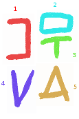
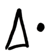
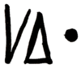
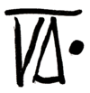

Blocks
To start with, it's probably a good idea to define how Valbli plans to form blocks. In Hangul, letters come together, and form syllable blocks. Rarely are there blocks composed of multiple syllables. In Lojban, syllables are formed around vowel sounds, often surrounded by consonants or consonant pair. Gismu, the core to Lojban vocabulary, are all composed of 5 letters, and 2 syllables. Thus, gismu exist in either CCVCV or CVCCV. Rafsi, abbreviated gismu affixes are a single syllable that exist as either CVC, CCV, or CVV forms.
For these reasons, up to six Valbli letters stack into Syllable Blocks, and up to two Syllable Blocks stack into 1 Word Block. As a result, Cmavo and Gismu can all be represented in a single glyph. Lujvo (compond words formed from Rafsi syllables) may require multiple glyphs because Lujvo can be arbitrarily long (as long as they end in a vowel).
The tables below would represent a couple syllable formats.
╔════════════╦════════════╗ ╔════════╦════════╦════════╗ ║ ║ ║ ║ ║ ║ ║ ║ 1 ║ 2 ║ ║ 1 ║ 2 ║ 3 ║ ║ ║ ║ ║ ║ ║ ║ ╚════════════╩════════════╝ ╚════════╩════════╩════════╝
These two formats represent either (C)CV, CV(V) or even (V)VV syllables. It should be noted that Lojban does not treat the unvoiced glottal spirant (') as a vowel nor consonant, and instead acts more as a seperator for vowels. In Valbli, the unvoiced glottal spirant is a simple vertical line, and may be inserted BETWEEN the given positions.
However, these aren't the only positions letters may take. If the starting consonant of a syllable is a Stop or a Nazal consonant, the letter stretches horizontally to fill the row, and pushes the rest of the syllable below it. Similarly, a Stop or Nazal consonant at the END of the syllable, but not the start, will push the rest of the syllable above itself.
╔═════════════════════════╗ ╔═════════════════════════╗ ╔════════════╦════════════╗ ║ 1 ║ ║ 1 ║ ║ 1 ║ 2 ║ ╠═════════════════════════╣ ╠════════════╦════════════╣ ╠════════════╩════════════╣ ║ 2 ║ ║ 2 ║ 3 ║ ║ 3 ║ ╚═════════════════════════╝ ╚════════════╩════════════╝ ╚═════════════════════════╝
And if the starting or ending consonant is a Fricative or Sibilant cosonant, the letter stretches vertically, forcing the rest of the syllable to be stacked next to it.
╔════════════╦════════════╗ ╔════════════╦════════════╗ ║ ║ 2 ║ ║ 1 ║ ║ ║ 1 ╠════════════╣ ╠════════════╣ 3 ║ ║ ║ 3 ║ ║ 2 ║ ║ ╚════════════╩════════════╝ ╚════════════╩════════════╝
The diagram to the right represents the gismu, "sutra" (fast), with every letter color-coded and the reading order labled. The word-block is composed of two syllables stacked on top of each other, with the top one being read first. Each syllable is read with the top-left most letter first, in the order shown in the tables above. In that case of "sutra", the first syllable is "sut". The first letter, "s" is a Sibilant, and thus it stretches vertically, pushing the rest of the syllable to its side. As a result, "u" and "t" are read from top to bottom. In the case of "ra", the only consonant "r" does not modify itself under any circumstant, and thus both letters fill the syllable block normally.
Valbli's writing direction could be either top-to-bottom or left-to-right. Either mode has its benefits, and in either instance, spaces are completely optional. However, it should be noted that when writing top-to-bottom, it becomes difficult to distinguish one syllable from the other. Can you read what the sentence below says?

Something to keep in mind, is that the glottal stop (.) and glottal spirant (') do not completely act as letters in Valbli, much like they do not treated as phenomes of their own in Lojban phonlogy. For this reason, neither of these letters truly fit into the tables above. A . will never be inserted mid-word, and thus the only place it can be placed is above and/or below a word block, and a ' will only appear between vowels. In that case, a ' can be placed between any vowel without changing the format of the syllable. If the two vowels in question are stacked vertically, then a horizontal line will be placed between them.
The table below illustrates this interaction.
|  |  |  |  |
| ai | rai | a'i | ra'i |
|---|---|---|---|
|  |  |
 |  |
| .rai | ta'a | fa'a | .fa'a |